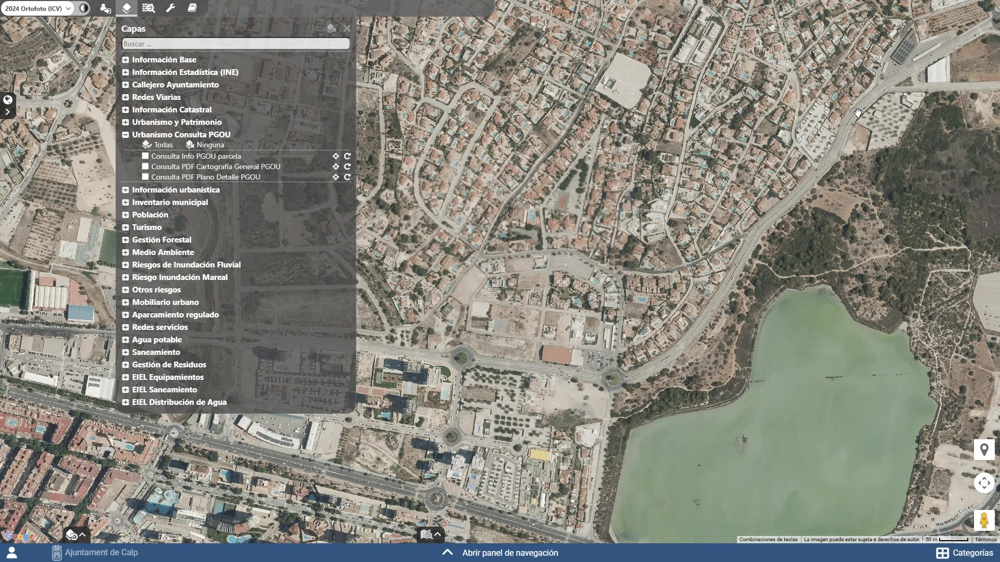

Plataforma
GeoGIS
Sistema de información geográfica para la administración local. Geonet lo desarrolla y lo implanta en cada ayuntamiento como un geoportal propio: portada institucional, visor y las capas que ese municipio necesita.
Tres piezas, no una URL
GeoGIS es el visor. El geoportal es la portada del ayuntamiento, que abre su GeoGIS. El visor de Geonet es otra instancia, solo con capas de dominio público.
- GeoGIS
- La plataforma: mapa, consultas, capas, roles y herramientas de análisis.
- Geoportal municipal
- La portada del ayuntamiento. Se elige una temática o se entra al visor vacío. En producción vive en el dominio del municipio.
- Visor de capas públicas
- visor.geonet.es es GeoGIS sin capas propias de ningún ayuntamiento.

Qué se ve sin identificarse
Sin cuenta se consulta lo publicado: información de dominio público y las capas municipales que el ayuntamiento ha decidido abrir. El login no es un área reservada genérica; solo protege lo que el municipio no quiere publicar —datos sensibles, capas no definitivas o de uso interno.

Temáticas habituales
Cada geoportal se configura a medida. Estas son las áreas de trabajo más frecuentes. En la portada del municipio, elegir una de ellas abre GeoGIS con esas capas activas.
-
 Planeamiento Normativa y parámetros urbanísticos asociados al territorio.
Planeamiento Normativa y parámetros urbanísticos asociados al territorio. -
 Catastro Cartografía catastral y datos alfanuméricos vinculados.
Catastro Cartografía catastral y datos alfanuméricos vinculados. -
 Callejero Viario oficial y números de policía georreferenciados.
Callejero Viario oficial y números de policía georreferenciados. -
 Infraestructuras Redes de abastecimiento, saneamiento y otros servicios.
Infraestructuras Redes de abastecimiento, saneamiento y otros servicios. -
 Mobiliario urbano Inventario y mantenimiento de elementos urbanos.
Mobiliario urbano Inventario y mantenimiento de elementos urbanos. -
 Medio ambiente Ordenación, protección y análisis de riesgos.
Medio ambiente Ordenación, protección y análisis de riesgos. -
 Turismo y patrimonio Puntos de interés, rutas y bienes catalogados.
Turismo y patrimonio Puntos de interés, rutas y bienes catalogados. -
 Inventarios Inventario municipal y encuesta de infraestructuras y equipamientos locales.
Inventarios Inventario municipal y encuesta de infraestructuras y equipamientos locales.
Para el ayuntamiento
Cómo implantar GeoGIS en su municipio
Hay dos caminos, según el tamaño del municipio. En ambos, Geonet implanta el geoportal, migra los datos, forma al personal y mantiene el sistema.
Más de 5.000 habitantes
Convenio de adhesión de la Diputación, con cuatro años de vigencia prorrogables. El ayuntamiento asume los costes de implantación y de mantenimiento.
Menos de 5.000 habitantes
La Diputación pondrá en marcha un plan propio: cada año se implantará GeoGIS en un número de municipios aún por determinar, con cargo a la Diputación.
Qué incluye
Geoportal a medida, migración de la información municipal, formación del equipo técnico y soporte. En producción, el geoportal se publica en el dominio del ayuntamiento.
El trámite de adhesión es para municipios de más de 5.000 habitantes. Si el suyo es menor, el cauce es el plan de la Diputación; puede consultarnos. Otras instituciones públicas pueden disponer de geoportal; el destinatario principal son los ayuntamientos de la provincia.